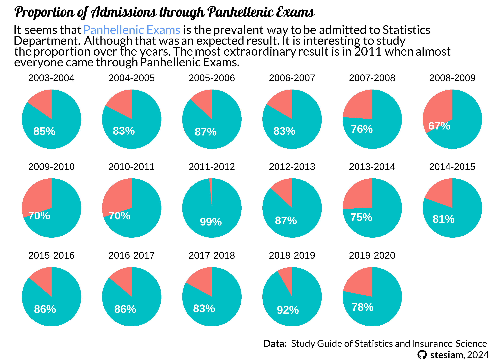
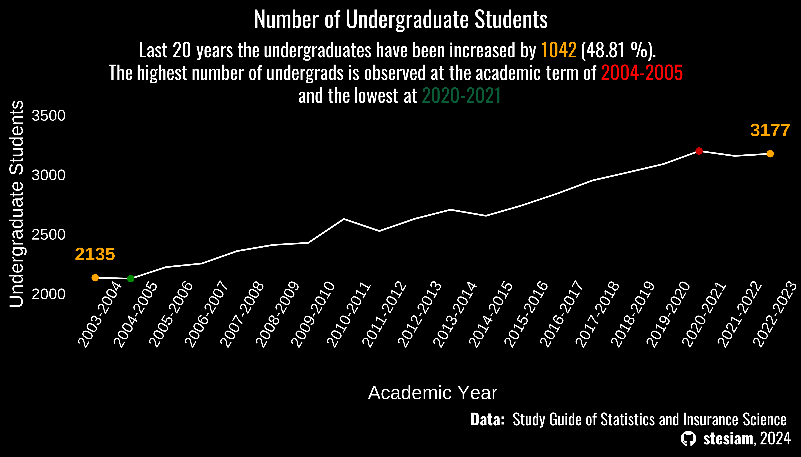
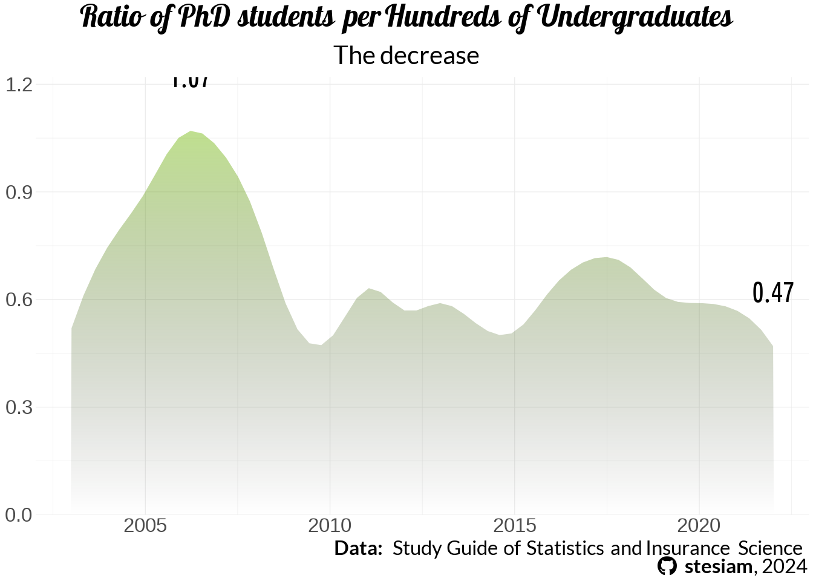
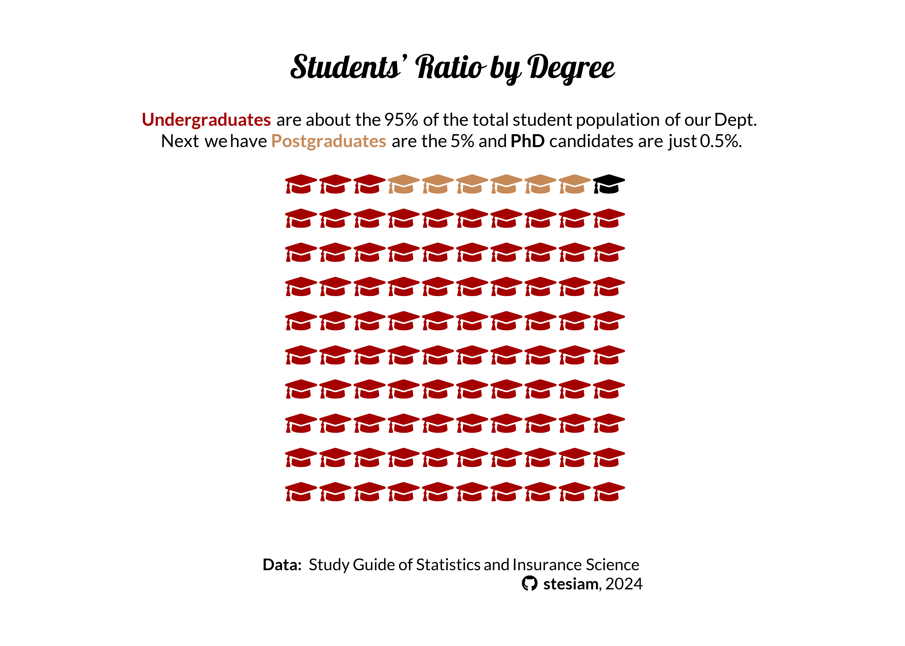
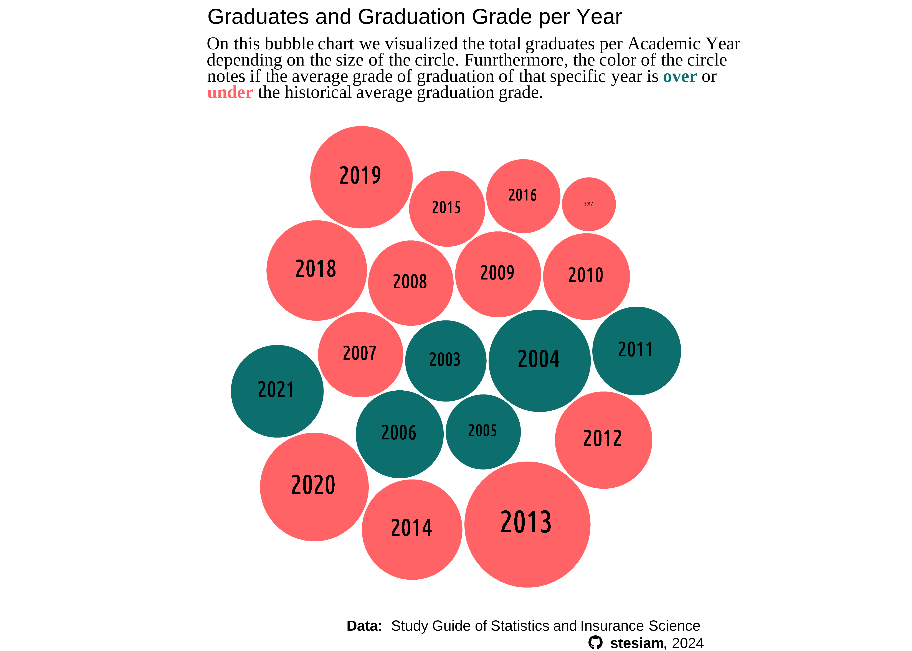

# remotes::install_github(c("ropensci/tabulizerjars", "ropensci/tabulizer"))Introduction
Note
Frequent updates should be expected until this note be erased.
The recent study guide includes data about the graduates and their average grade of graduation over the years. First and foremost the data we are interested in are included in table form (which is good 😀) but it is part of a pdf file (which is not good 😢). Thankfully, tabulizer is the solution to this kind of problems, as it one of its various features is to extract tabular data from pdf files.
Load Packages
As I will extract tables from a pdf file, I will definitely need tabulizer package. Unfortunately, I was not able to install the specific package, as I was getting an error similar to this one. This issue seems to be related to rJava package and this comment solved the issue. After installing rJava, I was able to install successfully tabulizer as below:
library(dplyr)
library(tidyr)
library(ggplot2)
library(ggtext)
library(glue)
library(showtext)
library(packcircles)
#library(ggcirclepack)
library(sysfonts)
library(hrbrthemes) #theme_ipsum_rs
library(waffle)
library(reactable)
library(rJava)
library(tabulizer)
library(pdftools)
font_add_google("Lobster", "lobster")
font_add_google("Lato", "economica")
font_add_google("Creepster", "Creepster")
font_add_google("Oswald", "Oswald")
font_add_google("Ubuntu Condensed", "uc")
sysfonts::font_add('fb', '_extensions/quarto-ext/fontawesome/assets/webfonts/fa-brands-400.ttf')
sysfonts::font_add('fs', '_extensions/quarto-ext/fontawesome/assets/webfonts/fa-solid-900.ttf')
showtext_auto()
showtext::showtext_opts(dpi = 300)Extract Data
The study guide gives a general description of the university, as well as the prerequisites for a degree and a detailed description of each course. In total, the guide is a little bit less than 200 pages! Of course we don’t need My main source of data is the Department’s study guide. The most recent one (2022) has data on admissions, graduations etc., since 2004. The study guide gives a general description of the university, as well as the prerequisites for a degree and a detailed description of each course. In total, the guide is a little bit less than 200 pages! Of course we don’t need everything in there. I am just interested on the tables of the last pages, so I will extract those pages first from the original pdf.
# url = "https://www.unipi.gr/faculty/mbouts/anak/OS_22_23.pdf"
#
# download.file(url,
# destfile = "sg22.pdf",
# method = "wget",
# extra = "--no-check-certificate")
pdf_subset('sg22.pdf',
pages = 186:190, output = "subset.pdf")[1] "/home/stelios/stesiam.github.io/posts/2023-07-23-Graduates-of-Statistics/subset.pdf"So, we extracted the pages which we are interested in. Let’s take a look at them:
Thankfully, tabulizer comes with a very handy function to extract all the tables from a PDF file. Yeap, I know the original study guide is written in greek but don’t worry that’s just to take a basic understanding of how the pdf and the tables look. I will translate the column names when I will work with the data. But look at the bright side. At least we will get a notebook with ggplot2 visualizations as an alternative of those Excel graphs :)
statistics_tables <- extract_tables(
file = "subset.pdf",
method = "decide",
output = "data.frame")Extracting the tables from splitted PDF I get a list of 5 tables with my data. It’s amazing that in a matter of seconds I get all the information in a format ready for analysis. If I were to write them the traditional way (copy-paste) it would definitely take me an hour.
Admitted students
So, in Greece there is 1 standard way to be admitted to a university. Although there are 3 more ways which require some certain conditions. I will try to explain them as simple as possible.
Main Exams
Once a year, third-year high school students from all over Greece take exams on the same subjects at the same time. The exams are known as Panhellenic Exams. Until today, it’s one of the few things in Greece that as its integrity is not disputed, as the papers of students are getting graded by teachers from other areas. However, it has also faced considerable criticism for the pressure it places on students. In my opinion a fair one as everything in your life is depending on these exams… If you fail you should wait to retake them next year.
Typically the exams are being held between the second half of May and the first week of June. The students’ grades are getting published approximately either the end of June or the first days of July. Then you are completing a list on which you are declare which departments you are interested to. On the end of July the minimum grades to be admitted for each department are announced. Those can fluctuate significantly every year as they are depending on both students’ performance on the Exams and the difficulty of the exams.
In a nutchell, the departments from big cities like Attica (Athens, Piraeus) and Thessaloniki have the biggest demand and so the minimum grades for those are higher from the rest ones. For example, the Statistics Department in Piraeus had a minimum grade of 11700 in 2019 (for simplicity consider it like 11.7/20). The corresponding department of Statistics in University of Aegean the same year had a minimum grade of 5100 (5.1/20) (yes, that’s not a typo). Well there are many reasons behind that, as the continuance of austerity in Greece, but in general that’s the pattern.
Not so fun fact but when I made my list of preference for studies, Statistics in Piraeus was something like 15th place, so I guess my fate was that. Okay and a little bit of anxiety. :)
Transfer
As I wrote earlier there are some exceptions. First of all the Admission by Transfer is referring to transfer your place in one department with one similar-study in other city. There are many criteria mainly based on your income. For example, a student admitted on Statistics on University of Aegean could be admitted on Statistics Department on Piraeus (i.e. in case his/her family hasn’t enough income).
These seats are limited.
Entry Exams
In case you have already graduated a Bachelor programme then you are able to give Entry Exams on your department of choice, instead of the nightmare of Panhellenic Exams.
admitted_students = statistics_tables[[1]] %>%
.[-1,] %>%
setNames(c("Year", "Main_exams", "Transfer", "Entry_exams", "Other", "Total"))
admitted_students$Main_exams = admitted_students$Main_exams %>% as.integer()
admitted_students$Transfer= admitted_students$Transfer %>% as.integer()
admitted_students$Entry_exams = admitted_students$Entry_exams %>% as.integer()
admitted_students$Other = admitted_students$Other %>% as.integer()
admitted_students$Pct_Non_Main = (admitted_students$Main_exams/admitted_students$Total) %>% as.double()
rownames(admitted_students) = 1:nrow(admitted_students)
admitted_students = admitted_students %>%
pivot_longer(
cols = !Year,
names_to = "Admission_Type",
values_to = "count"
)
admitted_students = admitted_students %>%
dplyr::filter(Admission_Type == "Pct_Non_Main" &
!(Year %in% c("2020-2121","2021-2022", "2022-2023"))) %>%
mutate(perc = round((1 - count)*100, digits = 2),
perc100 = 100-perc) %>%
dplyr::select(c(-Admission_Type, -count)) %>%
tidyr::pivot_longer(., cols = !Year,values_to = "Obs") %>%
dplyr::rename(
)
admitted_students %>%
reactable(
defaultPageSize = 5
)I would like to examine the percentage of students who have been admitted by the other 3 ways over the years.
caption_text = glue("<b> Data: </b> Study Guide of Statistics and Insurance Science <br><span style='font-family:fb;' ></span> <b>stesiam</b>, 2024")
admitted_students1 =
admitted_students %>%
group_by(Year) %>%
mutate(lab.ypos = cumsum(Obs) - 0.5*Obs)
ggplot(data = admitted_students1, aes(x = "", y = Obs, fill = name)) +
geom_bar(stat="identity", width=1) +
geom_richtext(aes(y = lab.ypos, label = ifelse(name == "perc100", paste0(round(Obs), "%"), "")), color = "white", fontface = "bold",
fill = NA, label.color = NA)+
facet_wrap(~Year, nrow = 3) +
coord_polar("y", start=0) +
labs(
title = "Proportion of Admissions through Panhellenic Exams",
subtitle = glue("It seems that <span style = 'color:#619CFF; font-weight: bold'>Panhellenic Exams</span> is the prevalent way to be admitted to Statistics <br> Department. Although that was an expected result. It is interesting to study <br> the proportion over the years. The most extraordinary result is in 2011 when almost <br> everyone came through Panhellenic Exams."),
caption = caption_text
) +
theme_void(base_size = 12) +
theme(
legend.position = "none",
plot.title = element_markdown(family = "lobster", face="bold"),
plot.subtitle = element_markdown(family = "economica",
margin = margin(t=5,b=5)),
plot.caption = element_markdown(family = "economica",
lineheight = 1.2)
)

Student Population
A = statistics_tables[[2]] %>%
setNames(c("Year", "BSc", "MScAppliedStat", "MScActuar", "PhD")) %>%
.[-1,] %>%
mutate_at(., vars(-Year), as.integer) %>%
tidyr::pivot_longer(., cols = !Year, values_to = "Obs")
d = A %>%
dplyr::filter(name == "BSc" & (Year == "2003-2004" | Year == "2022-2023"))
e = A %>% dplyr::filter(name == "BSc") %>% dplyr::filter(.,Obs == max(Obs) | Obs == min(Obs)) %>%
.$Year
sub = glue("Last 20 years the undergraduates have been increased
by <span style = 'color:orange; font-weight: bold'>{d$Obs[2] - d$Obs[1]}</span> ({round(((d$Obs[2] - d$Obs[1])/d$Obs[1])*100, digits = 2)} %). <br>The highest number of undergrads is observed at the academic term of <span style = 'color:red; font-weight: bold'>{e[1]}</span> <br> and the lowest at <span style = 'color:#0a5c36; font-weight: bold'>{e[2]}</span>" )
A %>%
dplyr::filter(name == "BSc") %>%
ggplot(., aes(x = Year, y = Obs, group = "1")) +
ylim(2000, 3500) +
geom_line(color = "white") +
labs(title = "Number of Undergraduate Students",
x = "Academic Year",
y = "Undergraduate Students",
caption = caption_text,
subtitle = sub) +
geom_point(data= A %>% dplyr::filter(name == "BSc") %>% dplyr::filter(.,Obs == max(Obs)), aes(x = Year, y = Obs), color = "red3") +
geom_point(data= A %>% dplyr::filter(name == "BSc") %>% dplyr::filter(.,Obs == min(Obs)), aes(x = Year, y = Obs), color = "green4") +
geom_point(data = A %>% dplyr::filter(Year == "2003-2004" | Year == "2022-2023") %>% dplyr::filter(name == "BSc"), color = "orange") +
geom_text(data= A %>% dplyr::filter(Year == "2003-2004" | Year == "2022-2023") %>% dplyr::filter(name == "BSc"),aes(x = Year, y = Obs+200, label = Obs), color = "orange", fontface = "bold", size = 4) +
theme_minimal(base_size = 12) +
theme(axis.text.x = element_text(angle = 60,color = "white"),
axis.text.y = element_text(color = "white"),
axis.title = element_text(color = "white"),
panel.grid = element_blank(),
plot.title = element_text(family = "Oswald", hjust = 0.5),
plot.title.position = "plot",
plot.subtitle = element_markdown(family = "Oswald",
margin = margin(l = 10, r = 10),
lineheight = 1.2, hjust = 0.5),
plot.caption = element_markdown(family = "Oswald", size = 10,
lineheight = 1.2),
plot.background = element_rect(fill = "black", color = "black"),
panel.background = element_rect(fill = "black", color = "black"),
text = element_text(color = "white")
)
PhD Students Ratio
# statistics_tables[[3]] %>%
# setNames(c("Year", "MSc_AppliedStats", "MSc_Actuar")) %>%
# slice(-c(1:2))ms_phd_students = statistics_tables[[2]] %>%
setNames(c("AcademicYear", "BSc", "MSc (AppliedStat)", "MSc (Actuar)", "PhD")) %>%
.[-1,]
rownames(ms_phd_students) = 1:nrow(ms_phd_students)
ms_phd_students = ms_phd_students %>%
mutate_at(c("BSc", "MSc (AppliedStat)", "MSc (Actuar)", "PhD"), as.numeric) %>%
mutate(pct = round((PhD/BSc)*100, 2)) %>%
mutate(AcademicYear = stringr::str_remove(AcademicYear, "-.*"))Warning: There was 1 warning in `mutate()`.
ℹ In argument: `MSc (Actuar) = .Primitive("as.double")(`MSc (Actuar)`)`.
Caused by warning:
! NAs introduced by coercionlibrary(ggpattern)
library(MetBrewer)
bg_gradient <- grid::linearGradient(colours = rev(MetBrewer::met.brewer("Pillement")[5:6]))
spline.d <- as.data.frame(spline(ms_phd_students$AcademicYear, ms_phd_students$pct))
ggplot(spline.d, aes(x = x, y = y, group = 1)) +
ggpattern::geom_area_pattern(
pattern = "gradient",
fill = "#00000000",
pattern_fill = "#00000000",
pattern_fill2 = "#80C02080") +
labs(
title = "Ratio of PhD students per Hundreds of Undergraduates",
subtitle = "The decrease ",
caption = caption_text
) +
geom_text(data = spline.d %>% dplyr::filter(y == min(y) | y == max(y)),aes(label = round(y,digits = 2), y = y+0.05), fontface = "bold", family = "uc", nudge_y =0.1, size = 2) +
scale_y_continuous(expand = c(0, 0), limits = c(0, NA)) +
theme_minimal(base_size = 5) +
theme(legend.position = "none",
plot.title.position = "plot",
plot.title = element_markdown(family = "lobster", face="bold",
hjust = 0.5),
plot.subtitle = element_markdown(family = "economica",
margin = margin(t=5,b=5, r=10, l = 10),
hjust = 0.5,
lineheight = 1.2),
plot.caption = element_markdown(family = "economica",
lineheight = 1.2),
axis.title = element_blank()
)
Structure of Students
B = statistics_tables[[2]] %>%
setNames(c("Year", "BSc_students", "MScStudentsA", "MScStudentsB", "PhD")) %>%
.[-1,] %>%
mutate_at(., vars(-Year), as.integer) %>%
mutate(
MScStudentsB = tidyr::replace_na(MScStudentsB, 0),
MSc_Students = MScStudentsA + MScStudentsB
) %>%
dplyr::select(-c("MScStudentsA", "MScStudentsB")) %>%
relocate(., MSc_Students, .after = "BSc_students") %>%
mutate(
total = BSc_students + MSc_Students + PhD,
BSc_students = BSc_students/total,
MSc_Students = MSc_Students/total,
PhD = PhD/total
) %>%
mutate_at(vars(!c(Year, total)), ~round(.*100, 2)) %>%
dplyr::select(c(-total)) %>%
tidyr::pivot_longer(., cols = !c(Year), values_to = "Obs")Warning: There was 1 warning in `mutate()`.
ℹ In argument: `MScStudentsB = .Primitive("as.integer")(MScStudentsB)`.
Caused by warning:
! NAs introduced by coercionB %>%
dplyr::filter(Year == "2021-2022") %>%
ggplot(., aes(label=name, values=round(Obs))) +
geom_pictogram(n_rows = 10,
flip = TRUE,
make_proportional = TRUE,
family = "fs", size = 5,
aes(color = name)) +
scale_label_pictogram(
name = NULL,
values = c(
"BSc_students" = "graduation-cap",
"MSc_Students" = "graduation-cap",
"PhD" = "graduation-cap"
)
) +
scale_color_manual(
name = NULL,
values = c(
BSc_students = "#a40000",
MSc_Students = "#c68958",
PhD = "black"
)
) +
labs(
title = "Students' Ratio by Degree",
subtitle = "**<span style = 'color:#a40000; font-weight: bold'>Undergraduates</span>** are about the 95% of the total student population of our Dept. <br> Next we have **<span style = 'color:#c68958; font-weight: bold'>Postgraduates</span>** are the 5% and **<span style = 'color:black; font-weight: bold'>PhD</span>** candidates are just 0.5%.",
caption = caption_text
) +
coord_equal() +
theme_ipsum_rc(grid="") +
theme_enhance_waffle() +
theme(legend.position = "none",
plot.title.position = "plot",
plot.title = element_markdown(family = "lobster", face="bold",
hjust = 0.5),
plot.subtitle = element_markdown(family = "economica",
margin = margin(t=5,b=5, r=10, l = 10),
hjust = 0.5, size = 10,
lineheight = 1.2),
plot.caption = element_markdown(family = "economica",
lineheight = 1.2))
Graduation Rate
Graduates & Graduation Grade
I hope you are still here because for the end I hold the best part. Finally, how did we perform? The study guide gives a distribution
extractGraduatesAndGrades = statistics_tables[[4]] %>%
setNames(c("Year", "[5.0 - 6)", "[6, 7)", "[7-8.5)", "[8.5-10]", "AVG_Grade")) %>%
slice(-c(1:4)) %>%
mutate(across("AVG_Grade"), separate(.,AVG_Grade, into = c("AVG_Grade", "Graduates"),sep = "\\(")) %>%
select(c("Year", "AVG_Grade", "Graduates")) %>%
mutate(
"Graduates" = stringr::str_remove_all(Graduates, "\\)")
) %>%
mutate(
AVG_Grade = stringr::str_replace_all(AVG_Grade, ",", ".")
) %>%
mutate_at(vars("AVG_Grade", "Graduates"), as.numeric)data = extractGraduatesAndGrades %>%
mutate(
AVG_Group = ifelse(AVG_Grade >= mean(AVG_Grade), "over", "under")
) %>%
mutate(
Year = stringr::str_remove_all(Year, "-.*")
)
packing <- circleProgressiveLayout(data$Graduates, sizetype='area')
data <- cbind(data, packing)
data <- data |>
rename(xcirc = x,
ycirc = y,
radius_circ = radius) |>
tibble::rowid_to_column('id')
# Calculate the 50 vertices points for each circle
dat.gg <- circleLayoutVertices(packing, npoints=50)
final_data <- left_join(data, dat.gg, by = join_by(id))ggplot(data = final_data) +
geom_polygon(aes(x,
y,
group = Year,
fill = AVG_Group),
colour = "white",
# alpha = 0.7
) +
scale_fill_manual(values = c("under"="#ff6366","over" = "#0D6E6E"))+
geom_richtext(aes(xcirc,
ycirc,
size = Graduates,
label = glue("{Year}")),
family = 'uc',
fontface = 'bold',
fill = NA, label.color = NA) +
labs(title = "Graduates and Graduation Grade per Year",
subtitle = "On this bubble chart we visualized the total graduates per Academic Year <br> depending on the size of the circle. Funrthermore, the color of the circle <br> notes if the average grade of graduation of that specific year is **<span style = 'color: #0D6E6E'>over</span>** or <br>**<span style = 'color: #ff6366'>under</span>** the historical average graduation grade.",
x = NULL,
y = NULL,
caption = caption_text) +
coord_equal() +
theme_void(base_size = 10) +
theme(
legend.position = "none",
plot.subtitle = element_markdown(family = "serif"),
plot.caption = element_markdown(lineheight = 1.2)
)
Online vs On-campus Exams
Due to pandemic COVID-19, Greek government suspended the operation of schools (elementary, high school, universities) on Tuesday 10 March 2020. Some days later imposed lockdown measures. That period our department organized online lectures and organized online exams for the majority of the courses on Spring Semester and on the September (retake exams). Long story short that lasted for at least 2 years.
Students Graduated in 6 Years
Last but not least, maybe the most nervewrecking statistic is that one. Just for clarification, our studies have a duaration of four years. Although the majority will not successfully finish their degree even in 6 Years. This is important as currently has been voted the time-limit on BSc studies. We have 6 years to complete our studies otherwise we will not take the degree. In the next years, the best case scenario is that 60% of my collegeaus who were about to graduate will not get their degree.

Acknowledgements
Dataset based on recent study guide recent study guide of Department of Statistics and Insurance Science of the University of Piraeus.
Image by Victoria Loveland from Pixabay
Statistics of Statistics’ Graduates – stesiam Statistics of Statistics’ Graduates – stesiam Statistics of Statistics’ Graduates – stesiam stesiam Extracting tabular data from PDF file, in order to explore facts about graduates of Statistics and Insurance Department in University of Piraeus Extracting tabular data from PDF file, in order to explore facts about graduates of Statistics and Insurance Department in University of Piraeus